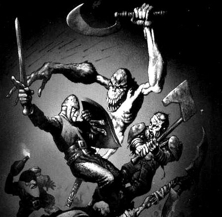

The converter you proposed: turning Myth: The Fallen Lords plugins into Myth II plugins. Here is where it stands, and the questions where your knowledge of the game would steer it.
Every card below opens a page of its own with a box where you can write your answer — reply to as many or as few as you like.

- 1 · Clickany card below
- 2 · Readthe update or question
- 3 · Sign inwith GitHub, once
- 4 · Typeyour answer and press Comment
Updates
Questions for you
- Q1Which TFL content matters most to you?Read & reply →
- Q2Terrain: faithful or smooth?Read & reply →
- Q3Is there a coop map with known scoring we could test against?Read & reply →
- Q4TFL gameplay or Myth II gameplay?Read & reply →
- Q5Would you play-test?Read & reply →
- Q6What does “done” look like for you?Read & reply →